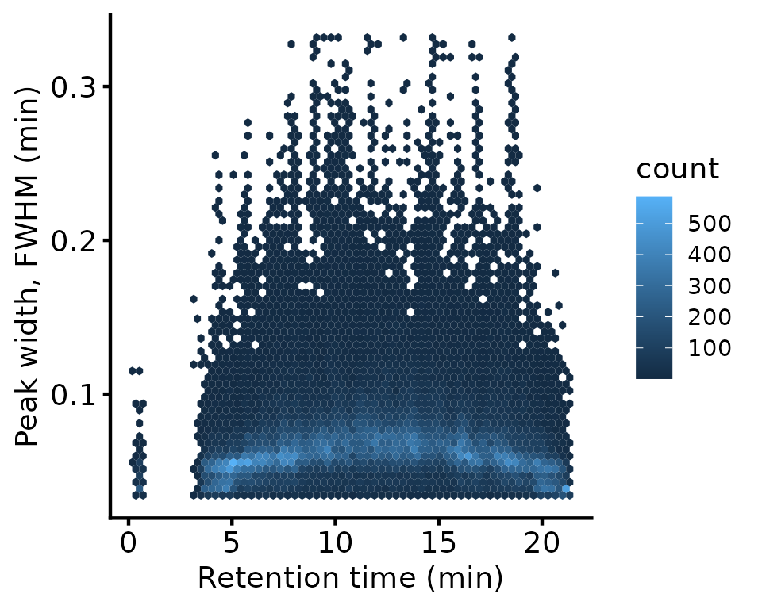
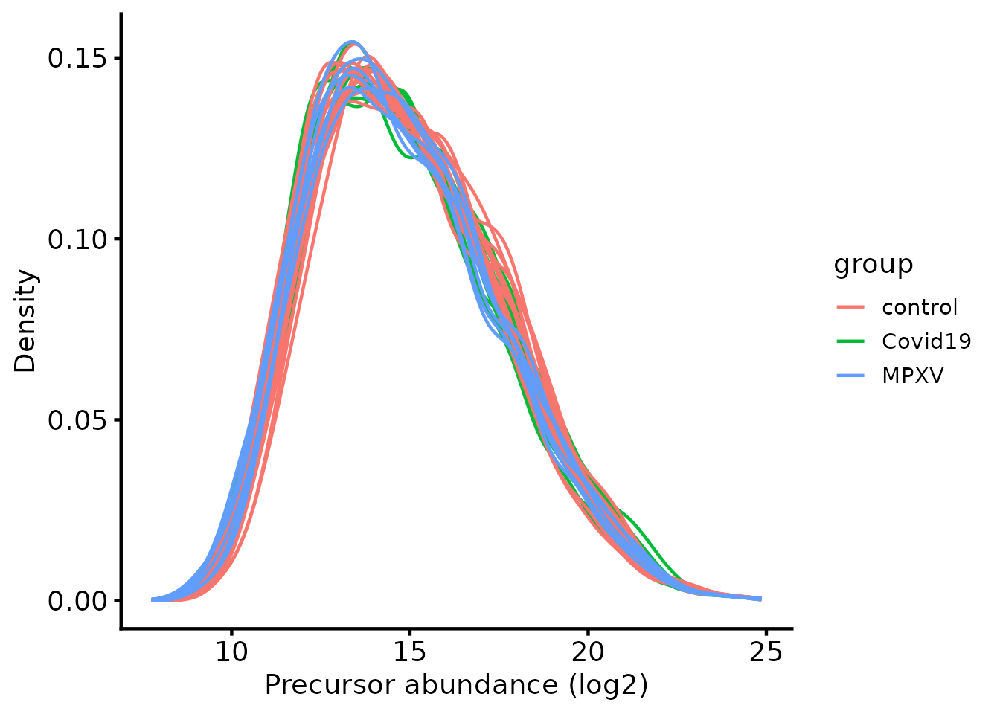
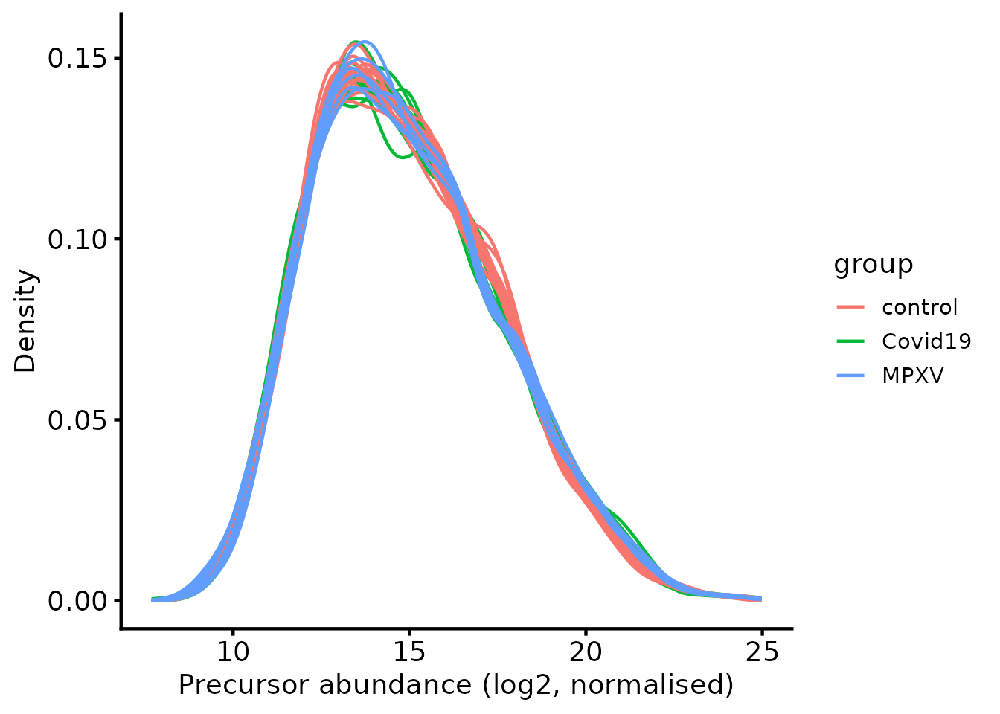
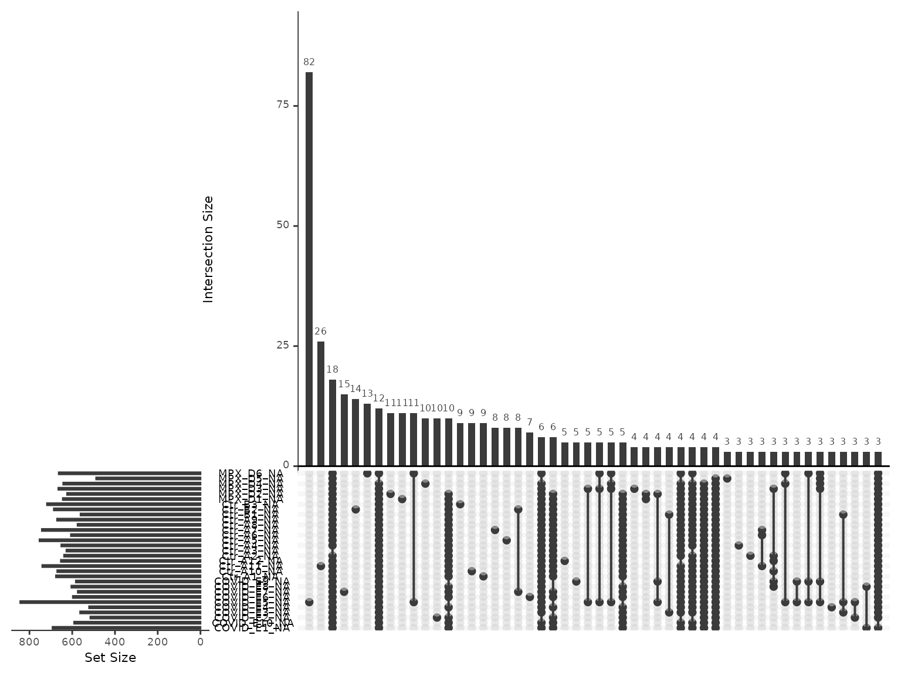
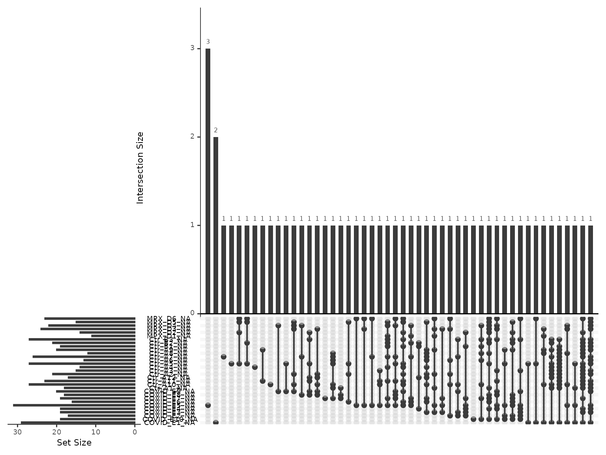
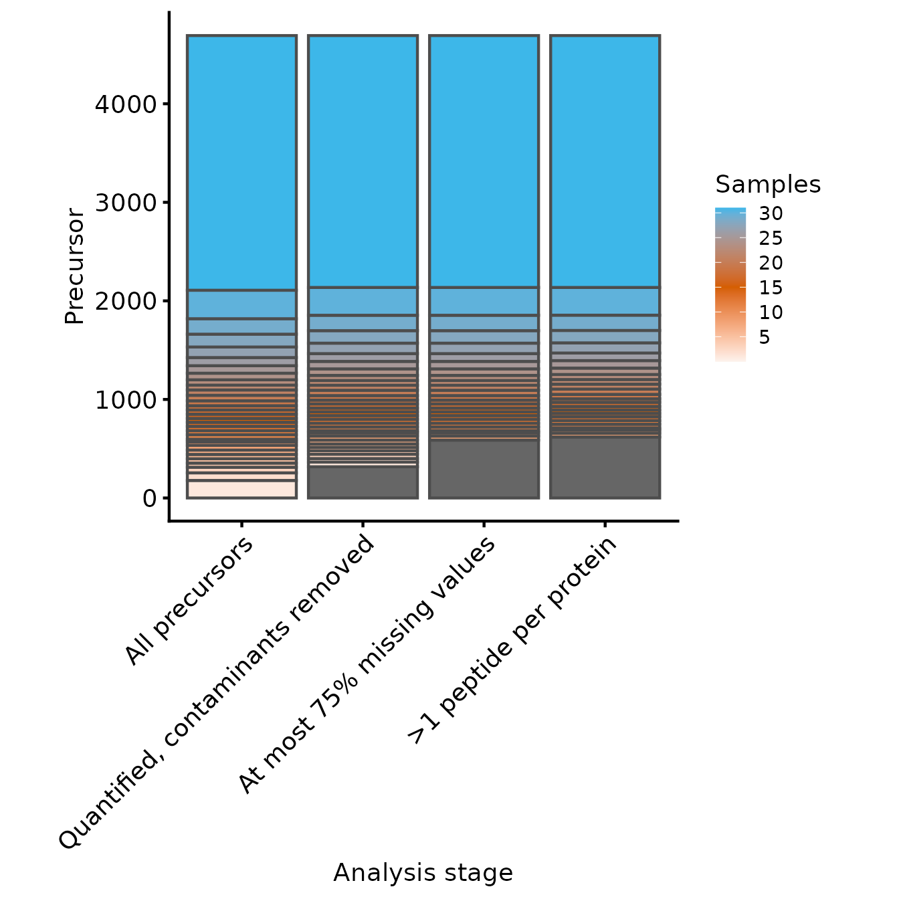
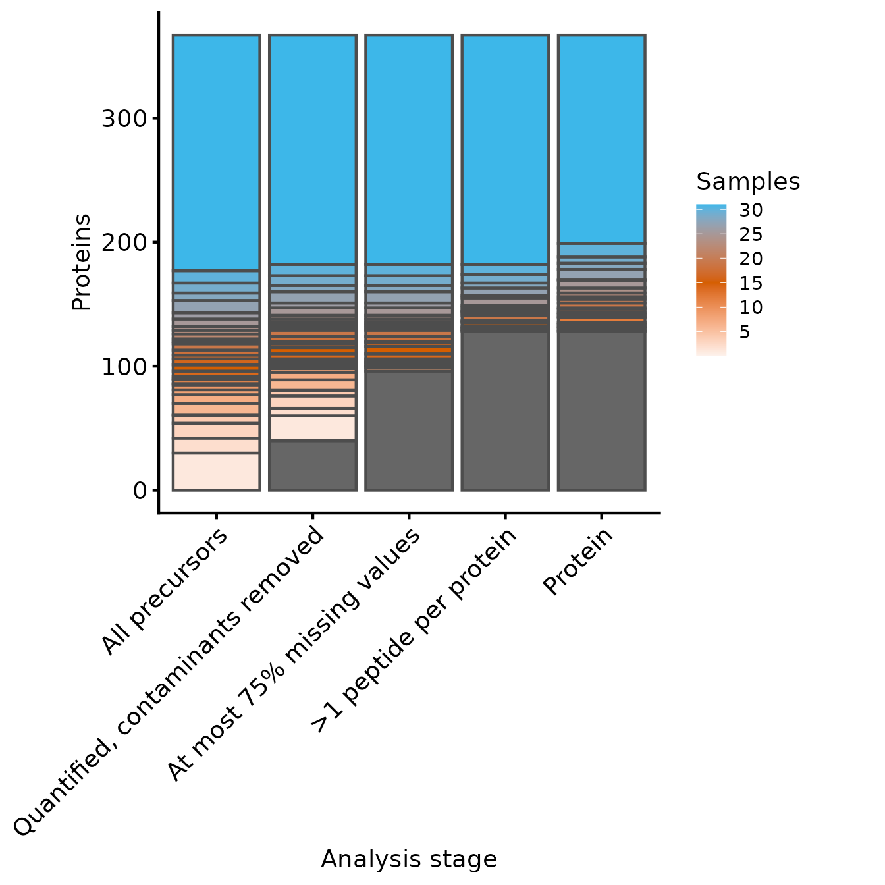

LFQ-DIA workflow: precursor QC and protein summarisation
Tom Smith
2026-09-11
Source:vignettes/LFQ_DIA_Precursor_QC_Summarisation.Rmd
LFQ_DIA_Precursor_QC_Summarisation.RmdLabel-Free Quantification (LFQ) is the simplest form of quantitative proteomics, in which different samples are quantified in separate MS runs. Quantification is either performed by Data-Dependent Acquisition (DDA), where the Mass Spectrometer triggers fragmentation of ions within a given m/z range with the aim being to focus attention of individual peptides separately, or Data-Independent Acquisition (DIA), where a much wider m/z range is used and a mix of peptides are co-fragmented and quantified simultaneously by deconvoluting the resultant complex spectra. This article covers LFQ-DIA; DDA is a different enough problem to have its own, in LFQ-DDA peptide QC.
DIA data is commonly searched with DIA-NN, which reports results at multiple levels. This article starts from the precursor level — a specific peptide sequence, with modifications, at a specific charge state — because it is the level at which the QC decisions below can still be made. Since DIA co-fragments many precursors at once, DIA-NN infers identifications either from a project-specific spectral library or from a library predicted in-silico from the sequence database, then rescores them, optionally using match-between-runs (MBR) to borrow confidence across runs. None of that removes the need to filter to confident identifications, remove contaminants, handle missing values and summarise to protein-level abundance before any statistical analysis.
This vignette works through one typical experiment from end to end: a whole-proteome comparison between groups, with no enrichment step and a single acquisition batch. That is the common case, and the choices made below are the conventional ones for it. An enrichment experiment — an IP, BioID or TurboID pulldown — needs different reasoning about normalisation and about missing values, and is covered in enrichment designs.
If this is your first analysis with the package, getting started explains which route applies to your experiment and shows a complete one in forty lines, and working with QFeatures objects covers the object every step below operates on. Annotations are worth retrieving before any of this — see protein annotation.
The data used in this vignette is a real DIA-NN
report.parquet output for a plasma proteomics case series
comparing Mpox (MPXV) infection, COVID-19, and healthy controls (Wang et al. 2022). It is also used, with
accompanying teaching material, in the Proteomics
Data Analysis Using R course. Unlike the truncated demonstration
files used elsewhere in biomasslmb, this dataset is used
here in full - it is small enough not to need subsetting
Spectronaut is the other search engine in common use for DIA data.
Only the reading step differs: reading Spectronaut output at the
end of this vignette shows how to reach the same precursors
assay, after which every step below applies unchanged.
Defining the contaminant proteins
Contaminant proteins have to be removed. This search was performed
against a version of the Hao lab’s ‘0602 Universal Contaminants’
database (Frankenfield et al. 2022) with
the Fetal Bovine Serum-derived entries removed, since they are not
relevant to a human plasma sample. The standard database bundled with
biomasslmb is used below instead — the FBS-specific entries
it additionally contains are never observed in this dataset, so
filtering behaves identically either way.
contaminant_fasta_inf <- system.file(
"extdata", "0602_Universal_Contaminants.fasta.gz",
package = "biomasslmb"
)
# Extract the protein IDs associated with each contaminant protein
contaminant_accessions <- biomasslmb::get_contaminant_fasta_accessions(contaminant_fasta_inf)
print(head(contaminant_accessions))
#> [1] "Cont_P00722" "Cont_P09870" "Cont_P30879" "Cont_P0C1U8" "Cont_Q2FZL2"
#> [6] "Cont_P00698"DIA-NN was run with this contaminants database included directly in
the search FASTA, so contaminant entries are named with a
Cont_ prefix that is carried straight through into the
Protein.Ids and Protein.Group columns of the
DIA-NN output. filter_features_diann uses this prefix
automatically, in addition to the contaminant_accessions
extracted above.
The prefix and the accession list are separate defences, and a search database whose contaminant entries were never renamed provides neither. Contaminants and protein FDR measures what each one catches and what is left behind when they do not match.
Read in input data
The data go into a QFeatures object, the standard
Bioconductor container for quantitative proteomics data. See here
for documentation about the QFeatures object.
Unlike PD’s peptide-level export, DIA-NN’s
report.parquet is a long-format table:
each row is a single precursor-sample combination, rather than one row
per precursor across all samples. arrow::read_parquet reads
it.
diann_report_inf <- system.file(
"extdata", "monkeypox_plasma_proteomes.parquet",
package = "biomasslmb"
)
diann_df <- arrow::read_parquet(diann_report_inf)
dim(diann_df)
#> [1] 120505 71Sample metadata (which group, sex and age band each run belongs to)
is provided separately, in monkeypox_metadata.xlsx.
metadata_inf <- system.file(
"extdata", "monkeypox_metadata.xlsx",
package = "biomasslmb"
)
sample_metadata <- readxl::read_excel(metadata_inf)
print(sample_metadata)
#> # A tibble: 31 × 5
#> sample_id runCol group sex age.group
#> <chr> <chr> <chr> <chr> <chr>
#> 1 20220624_Z1_ZW_001_30-0066_Ctr-A1_heat_DIA Ctr_A1 control m 21-30
#> 2 20220624_Z1_ZW_001_30-0066_Ctr-A10_heat_DIA Ctr_A10 control m 31-40
#> 3 20220624_Z1_ZW_001_30-0066_Ctr-A11_heat_DIA Ctr_A11 control m 31-40
#> 4 20220624_Z1_ZW_001_30-0066_Ctr-A12_heat_DIA Ctr_A12 control m 41-50
#> 5 20220624_Z1_ZW_001_30-0066_Ctr-A2_heat_DIA Ctr_A2 control m 21-30
#> 6 20220624_Z1_ZW_001_30-0066_Ctr-A3_heat_DIA Ctr_A3 control m 21-30
#> 7 20220624_Z1_ZW_001_30-0066_Ctr-A4_heat_DIA Ctr_A4 control m 21-30
#> 8 20220624_Z1_ZW_001_30-0066_Ctr-A5_heat_DIA Ctr_A5 control m 21-30
#> 9 20220624_Z1_ZW_001_30-0066_Ctr-A6_heat_DIA Ctr_A6 control m 21-30
#> 10 20220624_Z1_ZW_001_30-0066_Ctr-A7_heat_DIA Ctr_A7 control m 21-30
#> # ℹ 21 more rowsThe Run column in the DIA-NN output inherits the full
raw file path, pasting together the .wiff2 folder and
.wiff.scan file names. Stripping that back to match the
sample_id field in the metadata allows the concise
runCol label to be merged in, which serves as the sample
identifier from here on.
diann_df[, "Run"] %>% unique() %>% head(2)
#> # A tibble: 2 × 1
#> Run
#> <chr>
#> 1 20220624_Z1_ZW_001_30-0066_COVID-E9_heat_DIA.wiff2-20220624_Z1_ZW_001_30-0066…
#> 2 20220624_Z1_ZW_001_30-0066_MPX-D2_heat_DIA.wiff2-20220624_Z1_ZW_001_30-0066_M…
diann_df <- diann_df %>%
mutate(Run = sub('\\..*', '', Run)) %>%
merge(sample_metadata[, c("sample_id", "runCol")], by.x = "Run", by.y = "sample_id")
diann_df[, "Run"] %>% unique() %>% head(2)
#> [1] "20220624_Z1_ZW_001_30-0066_COVID-E1_heat_DIA"
#> [2] "20220624_Z1_ZW_001_30-0066_COVID-E10_heat_DIA"readQFeaturesFromDIANN reads the long-format table in,
creating one SummarizedExperiment per run. The split
matters: the per-run quality metrics in rowData
(Q.Value, FWHM and the rest) are run-specific,
and combining the runs immediately would discard them before they can be
filtered on. They are used below, and the runs joined afterwards.
dia_qf <- readQFeaturesFromDIANN(
diann_df,
quantCols = "Precursor.Quantity",
fnames = "Precursor.Id",
runCol = "runCol",
colData = sample_metadata
)
#> Checking arguments.
#> Loading data as a 'SummarizedExperiment' object.
#> Splitting data in runs.
#> Formatting sample annotations (colData).
#> Formatting data as a 'QFeatures' object.
#> Setting assay rownames.
dia_qf
#> An instance of class QFeatures (type: bulk) with 31 sets:
#>
#> [1] COVID_E1: SummarizedExperiment with 3834 rows and 1 columns
#> [2] COVID_E10: SummarizedExperiment with 3914 rows and 1 columns
#> [3] COVID_E2: SummarizedExperiment with 4016 rows and 1 columns
#> ...
#> [29] MPX_D4: SummarizedExperiment with 3950 rows and 1 columns
#> [30] MPX_D5: SummarizedExperiment with 4043 rows and 1 columns
#> [31] MPX_D6: SummarizedExperiment with 3861 rows and 1 columnsThe retention time (RT) distribution and its relationship with chromatographic peak width (FWHM, the Full-Width at Half Maximum) are worth assessing before anything is filtered, because a chromatography problem is cheaper to find now than after summarisation. Narrow, symmetrical peaks are what a good separation looks like, and FWHM rising systematically with RT would indicate the later part of the gradient is resolving poorly.
rbindRowData(dia_qf, i = names(dia_qf)) %>%
data.frame() %>%
ggplot(aes(RT, FWHM)) +
geom_hex(bins = 60) +
theme_biomasslmb(aspect_square = FALSE) +
labs(x = 'Retention time (min)', y = 'Peak width, FWHM (min)')
Filter precursors
DIA-NN assigns a Q-value to each precursor and protein group
identification, representing the local false discovery rate (FDR) at
that score threshold. This data was processed with match-between-runs
enabled, which is why both the run-level and library-level Q-values are
filtered (Q.Value/PG.Q.Value and
Lib.Q.Value/Lib.PG.Q.Value respectively), at a
standard 1% FDR threshold. Filtering only the run-level pair would
accept identifications that MBR transferred on weak library-level
evidence. Passing no i argument to
filterFeatures applies the filter to every per-run set at
once.
dia_qf <- dia_qf %>%
filterFeatures(~ Q.Value <= 0.01) %>%
filterFeatures(~ PG.Q.Value <= 0.01) %>%
filterFeatures(~ Lib.Q.Value <= 0.01) %>%
filterFeatures(~ Lib.PG.Q.Value <= 0.01)
#> 'Q.Value' found in 31 out of 31 assay(s).
#> 'PG.Q.Value' found in 31 out of 31 assay(s).
#> 'Lib.Q.Value' found in 31 out of 31 assay(s).
#> 'Lib.PG.Q.Value' found in 31 out of 31 assay(s).The per-run sets are then combined into a single
"precursors" set with joinAssays, aligning
features by Precursor.Id. A precursor not detected in a
given run becomes NA for that sample. Only
rowData columns that are shared across runs and have
consistent values survive the join; the run-specific quality metrics
already filtered on (Q.Value, RT) are dropped,
having served their purpose.
dia_qf <- joinAssays(
x = dia_qf,
i = names(dia_qf),
name = "precursors",
fcol = "Precursor.Id"
)
#> Using 'Precursor.Id' to join assays.
# The per-run sets are no longer needed now they're joined; removing them
# keeps the QFeatures object focused on the combined set for the rest of
# this vignette.
dia_qf <- removeAssay(dia_qf, i = which(names(dia_qf) != "precursors"))
#> Warning: 'experiments' dropped; see 'drops()'
#> harmonizing input:
#> removing 31 sampleMap rows not in names(experiments)
dia_qf <- sync_coldata(dia_qf, 'precursors')Routine filtering removes precursors that:
- Could originate from contaminants. See
?filter_features_diannfor further details, including the removal of contaminant-associated proteins. - Have more than one accession in
Protein.Group, meaning DIA-NN could not resolve which protein the precursor came from. - Don’t have any quantification values
filter_features_diann() applies all three by default, so
the call below passes none of them. unique_master asks
whether the search engine settled on a single protein identity. The
separate proteotypic argument asks whether the peptide
sequence occurs in only one protein at all — a feature can have one
unambiguous master protein and still be shared with the other members of
that protein group. See peptides are not proteins.
dia_qf[['peptides_filtered']] <- biomasslmb::filter_features_diann(
dia_qf[['precursors']],
contaminant_proteins = contaminant_accessions
)
#> Filtering data...
#> 4692 features found from 367 master proteins => Input
#> 381 contaminant proteins supplied
#> 275 proteins identified as 'contaminant associated'
#> 4417 features found from 345 master proteins => contaminant features removed
#> 4417 features found from 345 master proteins => associated contaminant features removed
#> 4417 features found from 345 master proteins => features without a master protein removed
#> 4375 features found from 327 master proteins => features with non-unique master proteins removed
#> 4375 features found from 327 master proteins => features without quantification removed
dia_qf <- sync_coldata(dia_qf, 'peptides_filtered')Summarisation needs the quantification values on a log scale, so they are transformed here.
dia_qf[['peptides_filtered']] <- QFeatures::logTransform(
dia_qf[['peptides_filtered']], base = 2)The precursor intensity distributions, coloured by
group:
biomasslmb::plot_quant(dia_qf[['peptides_filtered']], log2transform = FALSE, method = 'density') +
theme_biomasslmb(aspect_square = FALSE) +
aes(colour = group, group = sample) +
xlab('Precursor abundance (log2)')
Normalise
This is a whole-plasma-proteome comparison between clinical groups,
in which overall protein content is not expected to differ
systematically between groups, so any offset between the distributions
above is technical. diff.median normalisation with
QFeatures::normalize shifts each sample to a common median
and removes it. The assumption is worth stating, because an enrichment design breaks it — there
the conditions are expected to differ in composition, and normalising to
a common median erodes the signal being measured.
dia_qf <- QFeatures::normalize(
dia_qf, i = 'peptides_filtered', name = 'peptides_filtered_norm', method = 'diff.median')
dia_qf <- sync_coldata(dia_qf, 'peptides_filtered_norm')
biomasslmb::plot_quant(dia_qf[['peptides_filtered_norm']], log2transform = FALSE, method = 'density') +
theme_biomasslmb(aspect_square = FALSE) +
aes(colour = group, group = sample) +
xlab('Precursor abundance (log2, normalised)')
Summarising to protein-level abundances
Summarisation takes the protein group assignment at face value: every precursor contributes to exactly one protein group. That assignment is an inference rather than a measurement, and for proteins whose peptides are largely shared with their homologues it is not a reliable one. Peptides are not proteins covers how the assignment is made and how to tell which of your proteins it can support.
Before deciding how to handle missing values, it’s worth checking how
much missingness there is, and whether it’s structured by
group. condition_miss_score fits, for each
peptide, a logistic regression of missingness against
group, and returns Tjur’s R² as a per-feature score: values
near 1 mean a peptide’s missingness pattern is well explained by
group. condition_miss_index aggregates these
into a single dataset-level value between 0 and 1.
miss_res <- condition_miss_score(dia_qf, i = 'peptides_filtered_norm', group_cols = 'group')
#> Analysing assay 'peptides_filtered_norm': 4375 features x 31 samples
#> Group variable: group (3 levels: control, Covid19, MPXV)
#> Results: 1772 informative features | mean condition miss score = 0.144 | condition-structured: 1.7% | condition-independent: 30.9%
condition_miss_index(miss_res$summary)$index
#> Condition missingness index: 0.0698 | Weighted mean score: 0.1724 | Coverage: 40.5% (1772 / 4375 features informative) [coverage penalty applied]
#> [1] 0.06983525Missingness is substantial but unstructured by
group. 1772 of 4375 precursors have at least one missing value,
which is typical of DIA-NN precursor-level output, and yet the condition
missingness index is close to zero. That combination is what
distinguishes this from a pulldown, where missingness is explained by
condition by construction and discarding it would discard the finding.
plot_missing_upset shows the most common patterns.
plot_missing_upset(dia_qf, i = 'peptides_filtered_norm')
At this level of missingness, requiring complete precursors would
discard most of the data, which rules out summing and makes
MsCoreUtils::robustSummary the appropriate estimator: it
summarises accurately without complete features (Sticker et al. 2020). Precursors missing from
almost every sample still contribute little beyond noise, so a threshold
is applied first — retaining those observed in at least 25% of the 31
samples (pNA of at most 0.75), matching the threshold
applied to this dataset in the Proteomics
Data Analysis Using R course. Set it tighter and more of the plasma
proteome falls below the two-precursor rule imposed next; set it looser
and protein estimates rest on precursors seen a handful of times.
dia_qf[['peptides_filtered_missing']] <- QFeatures::filterNA(
dia_qf[['peptides_filtered_norm']], pNA = 0.75)
message_parse(rowData(dia_qf[['peptides_filtered_missing']]),
'Protein.Group',
"Removing peptides with > 75% missing values")
#> 4105 features found from 271 master proteins => Removing peptides with > 75% missing valuesPrecursors belonging to proteins with fewer than 2 precursors are removed next. This is routine practice and worth being explicit about, because it is doing more than tidying.
A protein quantified from a single precursor has no internal replication: there is no second measurement to disagree with the first, so nothing about it can be checked. Any error in that one precursor — a misassigned peptide, interference, a bad integration — passes straight through to the protein-level value with nothing to average it out. Its missingness pattern is also the missingness pattern of one precursor rather than of the protein, which matters for everything downstream that reasons about missing values.
The cost is real, and asymmetric: single-precursor proteins are
disproportionately the low-abundance ones, so this filter removes
preferentially from the part of the proteome that was hardest to
measure. min_features is the dial. Raising it buys
confidence and loses coverage; there is no threshold that is correct
independent of what the result will be used for.
min_peps <- 2
dia_qf[['peptides_for_summarisation']] <- filter_features_per_protein(
dia_qf[['peptides_filtered_missing']], min_features = min_peps, master_protein_col = 'Protein.Group')
message_parse(rowData(dia_qf[['peptides_for_summarisation']]),
'Protein.Group',
"Removing 'one-hit' wonders")
#> 4073 features found from 239 master proteins => Removing 'one-hit' wondersSummarising with robustSummary:
set.seed(42)
dia_qf <- aggregateFeatures(dia_qf,
i = "peptides_for_summarisation",
fcol = "Protein.Group",
name = "protein",
fun = MsCoreUtils::robustSummary,
maxit = 10000)
#> Your quantitative data contain missing values. Please read the relevant
#> section(s) in the aggregateFeatures manual page regarding the effects
#> of missing values on data aggregation.
#> Aggregated: 1/1
dia_qf <- sync_coldata(dia_qf, 'protein')The two-precursor filter above was applied per protein, not per
sample, and precursors with missing values were deliberately kept — so
in any given sample a protein can still end up summarised from a single
precursor. Nothing in the output marks these values as weaker than the
rest. get_protein_no_quant_mask() finds where a protein
abundance rests on fewer than n precursors, and
mask_protein_level_quant() replaces those values with
NA.
protein_retain_mask <- biomasslmb::get_protein_no_quant_mask(
dia_qf[['peptides_for_summarisation']], min_features = min_peps,
master_protein_col = 'Protein.Group')
dia_qf[['protein']] <- biomasslmb::mask_protein_level_quant(
dia_qf[['protein']], protein_retain_mask)Re-inspecting missing values at protein-level
Masking changes the missingness picture, so it is worth re-reading at protein level. 8.314% of protein values are missing overall, and at most 12.971% in any one sample — far less than at precursor level, because a protein only loses a sample when every one of its precursors does.
plot_missing_upset(dia_qf, i = 'protein')
Inspecting the number of peptides and proteins through the processing steps
Each filtering step above removed something, and the totals are
easier to judge together than one message at a time.
get_samples_present() and
plot_samples_present() show how many precursors and
proteins survived each stage, and in how many samples. Both take a named
character vector selecting the assays to plot, since the
QFeatures names are not self-explanatory.
The assay names to choose from:
names(dia_qf)
#> [1] "precursors" "peptides_filtered"
#> [3] "peptides_filtered_norm" "peptides_filtered_missing"
#> [5] "peptides_for_summarisation" "protein"Samples per peptide
Precursors first. The row variable is Precursor.Id, so
that the count is of unique precursors rather than of rows.
rename_cols <- c('All precursors' = 'precursors',
'Quantified, contaminants removed' = 'peptides_filtered',
'At most 75% missing values' = 'peptides_filtered_missing',
'>1 peptide per protein' = 'peptides_for_summarisation')
rowvars <- c('Precursor.Id')
samples_present <- get_samples_present(dia_qf[,,unname(rename_cols)], rowvars, rename_cols)
#> harmonizing input:
#> removing 62 sampleMap rows not in names(experiments)
plot_samples_present(samples_present, rowvars, breaks = seq(5, 30, 5)) + ylab('Precursor')
#> Scale for fill is already present.
#> Adding another scale for fill, which will replace the existing scale.
Samples quantified for each precursor at each level of processing
Samples per Protein
Then proteins, from the same functions: the named vector gains the
protein assay, and the row variable becomes
Protein.Group alone.
rename_cols_prot <- c(rename_cols, 'Protein' = 'protein')
rowvars_prot <- c('Protein.Group')
samples_present <- get_samples_present(dia_qf, rowvars_prot, rename_cols_prot)
plot_samples_present(samples_present, rowvars_prot, breaks = seq(5, 30, 5))
#> Scale for fill is already present.
#> Adding another scale for fill, which will replace the existing scale.
Samples quantified for each protein at each level of processing
The missingness and two-precursor filters are cheap in precursors and expensive in proteins. Few precursors go, because most belong to proteins that have several; many more proteins go, because a protein resting on one sparsely-observed precursor loses its only evidence. Those are the proteins whose quantification would have been least reliable, so the trade is usually worth making — but in plasma it falls hardest on the low-abundance fraction, which is often exactly where the interesting biology is.
# Save file to package as data so it can be read back in in other vignettes
usethis::use_data(dia_qf, overwrite = TRUE)Reading Spectronaut output
Everything above the precursors assay is DIA-NN
specific: the file format, the column names and the Q-value fields.
Everything below it is not. This section covers the difference, using a
Spectronaut export from a total-lysate comparison between a vehicle
control and an inhibitor treatment, three replicates each.
Spectronaut’s ‘BGS Factory Report’ is long-format like DIA-NN’s report, one row per precursor per run, but a plain TSV rather than parquet. The export shipped here has been reduced to the columns needed downstream, which is worth doing to your own exports too — the full report has well over a hundred columns and is correspondingly slow to read.
spectronaut_inf <- system.file(
"extdata", "spectronaut_report.tsv.gz", package = "biomasslmb")
spectronaut_df <- read.delim(spectronaut_inf)
colnames(spectronaut_df)
#> [1] "R.FileName" "PG.ProteinGroups"
#> [3] "PG.ProteinAccessions" "PG.Qvalue"
#> [5] "PG.PEP" "PEP.StrippedSequence"
#> [7] "PEP.NrOfMissedCleavages" "PEP.IsProteotypic"
#> [9] "EG.ModifiedSequence" "EG.IsDecoy"
#> [11] "EG.Qvalue" "EG.PEP"
#> [13] "EG.TotalQuantity..Settings." "EG.UsedForProteinGroupQuantity"
#> [15] "FG.Charge" "FG.Quantity"The correspondence with the DIA-NN fields used above is direct:
| Quantity | DIA-NN | Spectronaut |
|---|---|---|
| Run | Run |
R.FileName |
| Precursor quantity | Precursor.Quantity |
FG.Quantity |
| Precursor identifier | Precursor.Id |
EG.ModifiedSequence + FG.Charge
|
| Protein group | Protein.Group |
PG.ProteinGroups |
| Precursor confidence | Q.Value |
EG.Qvalue |
| Protein group confidence | PG.Q.Value |
PG.Qvalue |
Spectronaut has no single precursor identifier column, so one has to
be built: readQFeatures needs a value that is unique within
a run.
spectronaut_df$Precursor.Id <- paste(
spectronaut_df$EG.ModifiedSequence, spectronaut_df$FG.Charge, sep = '.')The sample metadata is constructed the same way as before. Here the run names already encode the design, so the columns are derived from them rather than from a separate file.
spectronaut_design <- data.frame(runCol = sort(unique(spectronaut_df$R.FileName)))
spectronaut_design <- spectronaut_design %>%
mutate(quantCols = 'FG.Quantity',
Condition = sub('_.*', '', runCol),
Replicate = sub('.*_', '', runCol))
knitr::kable(spectronaut_design)| runCol | quantCols | Condition | Replicate |
|---|---|---|---|
| Control_1 | FG.Quantity | Control | 1 |
| Control_2 | FG.Quantity | Control | 2 |
| Control_3 | FG.Quantity | Control | 3 |
| Treated_1 | FG.Quantity | Treated | 1 |
| Treated_2 | FG.Quantity | Treated | 2 |
| Treated_3 | FG.Quantity | Treated | 3 |
sn_qf <- readQFeatures(
spectronaut_df,
quantCols = "FG.Quantity",
fnames = "Precursor.Id",
runCol = "R.FileName",
colData = spectronaut_design
)
#> Checking arguments.
#> Loading data as a 'SummarizedExperiment' object.
#> Splitting data in runs.
#> Formatting sample annotations (colData).
#> Formatting data as a 'QFeatures' object.
#> Setting assay rownames.Filtering on the two Q-value columns and joining the runs is the same operation as above, with the Spectronaut column names substituted. Note that there are no library Q-value fields to filter on: match-between-runs is a DIA-NN concept and Spectronaut’s equivalent is handled within its own scoring.
sn_qf <- sn_qf %>%
filterFeatures(~ EG.Qvalue <= 0.01) %>%
filterFeatures(~ PG.Qvalue <= 0.01)
#> 'EG.Qvalue' found in 6 out of 6 assay(s).
#> 'PG.Qvalue' found in 6 out of 6 assay(s).
sn_qf <- joinAssays(
x = sn_qf, i = names(sn_qf), name = "precursors", fcol = "Precursor.Id")
#> Using 'Precursor.Id' to join assays.
sn_qf <- sync_coldata(sn_qf, 'precursors')
dim(sn_qf[['precursors']])
#> [1] 5390 6From here the vignette applies unchanged, with
Protein.Group replaced by PG.ProteinGroups
wherever it appears as a master_protein_col or
fcol. The one function that is DIA-NN specific is
filter_features_diann(), which relies on DIA-NN’s
Cont_ contaminant prefix and its column names; for
Spectronaut, filter contaminants by matching
PG.ProteinAccessions against the accessions from your
contaminants FASTA.
c(precursors = nrow(sn_qf[['precursors']]),
protein_groups = length(unique(rowData(sn_qf[['precursors']])$PG.ProteinGroups)),
percent_missing = round(100 * mean(is.na(assay(sn_qf[['precursors']]))), 1))
#> precursors protein_groups percent_missing
#> 5390.0 250.0 17.4At the equivalent stage the DIA-NN dataset above is 18.6% missing against this one’s 17.4%, though with 31 samples rather than 6, so the two are not strictly comparable. The point is only that they are the same order of magnitude: pervasive precursor-level missingness is a property of label-free acquisition rather than of the search engine, and the reasoning in handling missing values applies to both.
Where to go next
- Data exploration and statistical testing picks up from the protein-level abundances produced here, and works through this same dataset: checking the experiment worked, deciding which proteins can be tested, and testing them.
-
Handling missing values
covers the
filterNAthreshold applied above in full. DIA carries enough missingness for that choice to matter, and for the missingness-aware alternatives to testing to be worth considering. -
Choosing a summarisation
method explains why
robustSummaryrather than summing, and measures the difference. - If this was an enrichment experiment rather than a whole-proteome comparison, enrichment designs covers the normalisation and missing-value reasoning that changes.
Getting help
If your experiment does not fit what this article assumes, or a result looks wrong, please get in touch with Tom Smith (tsmith@mrclmb.ac.uk) rather than guessing — it is far easier to help while an analysis is in progress than to unpick a decision afterwards, and easier still before the samples are run. Getting started sets out which article applies to which experiment.
sessionInfo()
#> R version 4.5.3 (2026-03-11)
#> Platform: x86_64-pc-linux-gnu
#> Running under: Ubuntu 24.04.5 LTS
#>
#> Matrix products: default
#> BLAS: /usr/lib/x86_64-linux-gnu/openblas-pthread/libblas.so.3
#> LAPACK: /usr/lib/x86_64-linux-gnu/openblas-pthread/libopenblasp-r0.3.26.so; LAPACK version 3.12.0
#>
#> locale:
#> [1] LC_CTYPE=C.UTF-8 LC_NUMERIC=C LC_TIME=C.UTF-8
#> [4] LC_COLLATE=C.UTF-8 LC_MONETARY=C.UTF-8 LC_MESSAGES=C.UTF-8
#> [7] LC_PAPER=C.UTF-8 LC_NAME=C LC_ADDRESS=C
#> [10] LC_TELEPHONE=C LC_MEASUREMENT=C.UTF-8 LC_IDENTIFICATION=C
#>
#> time zone: UTC
#> tzcode source: system (glibc)
#>
#> attached base packages:
#> [1] stats4 stats graphics grDevices utils datasets methods
#> [8] base
#>
#> other attached packages:
#> [1] readxl_1.5.0 arrow_25.0.1
#> [3] dplyr_1.2.1 tidyr_1.3.2
#> [5] ggplot2_4.0.3 biomasslmb_0.1.0
#> [7] QFeatures_1.20.0 MultiAssayExperiment_1.36.2
#> [9] SummarizedExperiment_1.40.0 Biobase_2.70.0
#> [11] GenomicRanges_1.62.1 Seqinfo_1.0.0
#> [13] IRanges_2.44.0 S4Vectors_0.48.1
#> [15] BiocGenerics_0.56.0 generics_0.1.4
#> [17] MatrixGenerics_1.22.0 matrixStats_1.5.0
#>
#> loaded via a namespace (and not attached):
#> [1] DBI_1.3.0 gridExtra_2.3.1 rlang_1.3.0
#> [4] magrittr_2.0.5 clue_0.3-68 otel_0.2.0
#> [7] compiler_4.5.3 RSQLite_3.53.3 png_0.1-9
#> [10] systemfonts_1.3.2 vctrs_0.7.3 reshape2_1.4.5
#> [13] stringr_1.6.0 ProtGenerics_1.42.0 pkgconfig_2.0.3
#> [16] crayon_1.5.3 fastmap_1.2.0 backports_1.5.1
#> [19] XVector_0.50.0 labeling_0.4.3 utf8_1.2.6
#> [22] rmarkdown_2.32 UpSetR_1.4.1 visdat_0.6.0
#> [25] ragg_1.5.2 purrr_1.2.2 bit_4.6.0
#> [28] xfun_0.60 cachem_1.1.0 jsonlite_2.0.0
#> [31] blob_1.3.0 DelayedArray_0.36.1 cluster_2.1.8.2
#> [34] R6_2.6.1 bslib_0.12.0 stringi_1.8.9
#> [37] RColorBrewer_1.1-3 genefilter_1.92.0 cellranger_1.1.0
#> [40] jquerylib_0.1.4 Rcpp_1.1.2 assertthat_0.2.1
#> [43] knitr_1.52 BiocBaseUtils_1.12.0 Matrix_1.7-4
#> [46] splines_4.5.3 igraph_2.3.3 tidyselect_1.2.1
#> [49] abind_1.4-8 yaml_2.3.12 lattice_0.22-9
#> [52] tibble_3.3.1 plyr_1.8.9 withr_3.0.3
#> [55] KEGGREST_1.50.0 S7_0.2.2 evaluate_1.0.5
#> [58] uniprotREST_1.0.0 desc_1.4.3 survival_3.8-6
#> [61] Biostrings_2.78.0 pillar_1.11.1 corrplot_0.95
#> [64] checkmate_2.3.4 scales_1.4.0 xtable_1.8-8
#> [67] glue_1.8.1 lazyeval_0.2.3 tools_4.5.3
#> [70] hexbin_1.28.6 robustbase_0.99-7 annotate_1.88.0
#> [73] fs_2.1.0 XML_3.99-0.24 grid_4.5.3
#> [76] MsCoreUtils_1.22.1 AnnotationDbi_1.72.0 naniar_1.1.0
#> [79] cli_3.6.6 textshaping_1.0.5 S4Arrays_1.10.1
#> [82] AnnotationFilter_1.34.0 gtable_0.3.6 DEoptimR_1.2-1
#> [85] sass_0.4.10 digest_0.6.39 SparseArray_1.10.10
#> [88] htmlwidgets_1.6.4 farver_2.1.2 memoise_2.0.1
#> [91] htmltools_0.5.9 pkgdown_2.2.1 lifecycle_1.0.5
#> [94] httr_1.4.9 bit64_4.8.6 MASS_7.3-65